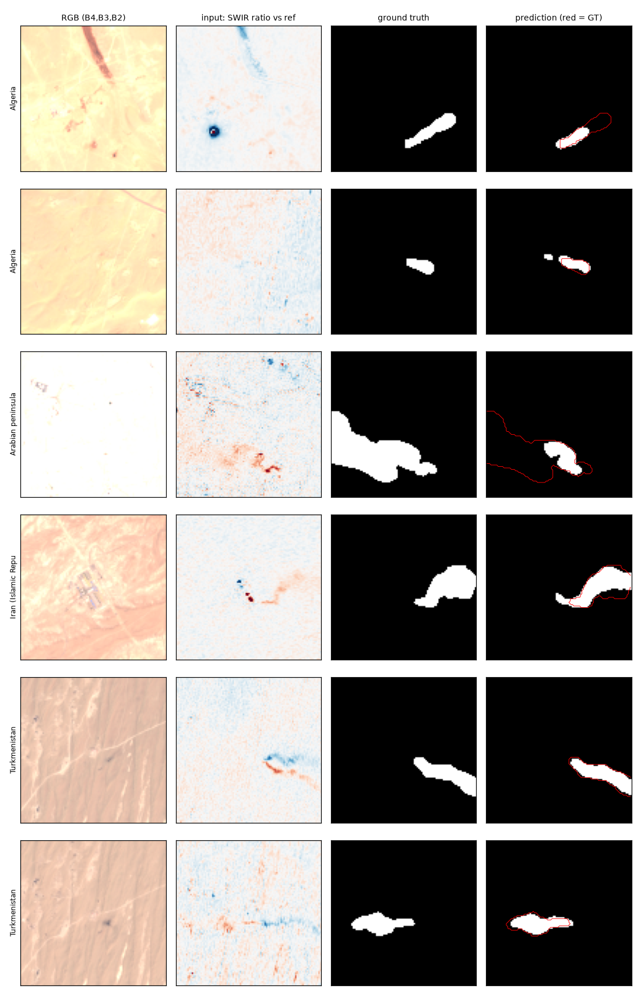
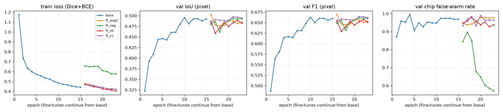

Demo project · Simon Loffler
Methane plumes,
spotted in orbit.
A small neural network that finds methane plumes in Sentinel-2 imagery, sized to run on the Spiral Blue SE-2 edge computer.
Released model fr_neg, 20 m grid, threshold 0.5. Not affiliated with or endorsed by Spiral Blue.
The problem
Find the leak before the downlink.
Methane super-emitters, such as the onshore oil, gas and coal sites in the training data, show up in Sentinel-2's shortwave-infrared bands as a faint dip in band 12 relative to band 11. The signal is around 1 % of reflectance.
Satellites can capture far more imagery than they can send down. Screening scenes on board means only chips with a likely plume need to be downlinked first, and an alert can go out sooner.
Spiral Blue is a partner on LatConnect 60's SWIRSAT methane mission, supplying its onboard computers (Spiral Blue announcement, June 2024). That mission uses the earlier SE-1; this project targets the SE-2.
The target
Spiral Blue SE-2.
- Module
- NVIDIA Jetson Orin NX 16GB
- Software
- JetPack 6.2 · TensorRT 10.3
- Power
- 10–25 W
- Deploy path
- ONNX opset 17, static shape → TensorRT FP16 / INT8 via
build_trt.sh
The model has not yet been run on Jetson hardware. Speeds below were measured on a CPU and a Colab T4.
How it works
Compare the scene with itself.
-
Eight channels in
Target-scene bands B2, B3, B4, B8A, B11 and B12, plus B11 and B12 from a plume-free reference image of the same site. Input is top-of-atmosphere reflectance.
-
Physics inside the graph
The model computes
log(B12/B11)for the target minus the same for the reference, in fp32, and adds it as a ninth channel. The deployed engine needs no preprocessing beyond reflectance scaling. -
A small U-Net
U-Net with a MobileNetV2 encoder, 4,133,819 parameters, trained with BCE plus Dice loss on MethaneSET (3,605 labelled Sentinel-2 chips, official temporal split with 2024 as the test year).
-
Teach it what “nothing” looks like
During training, 30 % of chips are swapped for plume-free pairs with an empty mask. This is the change that cut false alarms the most.
-
Model soups
Fine-tunes from one starting point were weight-averaged (Wortsman et al., 2022). The gain was about one IoU point, which is suggestive rather than proven.
Results
Measured, not promised.
2024 test split (1,050 chips, 76 % from sites also seen in training), 20 m grid, threshold 0.5. Single runs, no confidence intervals: treat differences of about 0.01 as noise.
- fr_neg released0.521
- fr uniform soup0.522
- fr_base0.511
- CPU greedy soup0.509
- CPU ft_neg0.483
- fr_neg released0.550
- fr uniform soup0.787
- fr_base0.902
- CPU greedy soup0.825
- CPU ft_neg0.562
| Model | Trained at | IoU | F1 | Precision | Recall | Detection | False alarm |
|---|---|---|---|---|---|---|---|
| fr_neg (released) | 10 m | 0.521 | 0.685 | 0.745 | 0.634 | 0.839 | 0.550 |
| fr uniform soup | 10 m | 0.522 | 0.686 | 0.733 | 0.644 | 0.906 | 0.787 |
| fr_base | 10 m | 0.511 | 0.677 | 0.742 | 0.622 | 0.934 | 0.902 |
| CPU greedy soup | 20 m | 0.509 | 0.675 | 0.710 | 0.643 | 0.899 | 0.825 |
| CPU ft_neg | 20 m | 0.483 | 0.651 | 0.745 | 0.578 | 0.814 | 0.562 |
IoU, F1, precision and recall are pixel-level, pooled over the split. Detection: share of plume chips where at least 0.4 ha is predicted and overlaps the label. False alarm: share of plume-free reference pairs with at least 0.4 ha predicted. Full-resolution (“fr”) models are scored on the same 20 m grid for a like-for-like comparison. Source: results.json and the full-res model's comparison_test.csv.
The takeaway. Full resolution and soups nudged IoU up by about a point. Training on plume-free pairs did far more for the number that matters on orbit: fr_neg flags 55 % of plume-free pairs against 90 % for fr_base, at the cost of lower detection (0.839 vs 0.934).
New sites are harder.
The official split is by year, not by site: 799 of the 1,050 test chips come from sites that also appear in training (same site name and emission point within 1 km). The MethaneSET dataset card says the split is grouped by emitter, but its metadata does not match that, and our earlier wording repeated the mistake. Scores on the 251 chips from 92 sites never seen in training:
| Model (20 m grid) | Test sites | Chips | IoU | F1 | Detection | False alarm |
|---|---|---|---|---|---|---|
| fr_neg (released) | Seen | 799 | 0.543 | 0.704 | 0.872 | 0.579 |
| fr_neg (released) | Unseen | 251 | 0.435 | 0.607 | 0.733 | 0.454 |
| CPU greedy soup | Seen | 799 | 0.526 | 0.689 | 0.926 | 0.835 |
| CPU greedy soup | Unseen | 251 | 0.447 | 0.618 | 0.813 | 0.793 |
Expect new-site performance nearer the unseen rows. The lower unseen false-alarm rate reflects a different scene mix, not better generalisation. 251 chips is a small sample. Source: test_seen_unseen.csv.
Fewer false alarms: a scene gate.
At 0.5 the model flags 36 % of real plume-free 2024 scenes. Reading the same output in two stages fixes most of that. First the scene is flagged when its highest 20 m probability clears a threshold set on 2021 validation scenes. Then the mask is drawn at 0.6. The model file is unchanged.
| Operating point | False alarms (2024 plume-free scenes) | Plumes caught, all | Plumes caught, unseen sites | Mask IoU when flagged |
|---|---|---|---|---|
| 0.5 everywhere | 35.6 % | 0.840 | 0.737 | 0.546 |
| High recall | 6.8 % | 0.556 | 0.454 | 0.601 |
| Default | 2.9 % | 0.389 | 0.315 | 0.622 |
| Strict | 0.4 % | 0.123 | 0.092 | 0.592 |
Thresholds were picked on 2021 validation data only, and every number above is from the 2024 test split. Fewer false alarms means fewer plumes caught. At the default, about 2 in 5 test plumes are caught, and about 1 in 3 at sites never seen in training (95 % interval 0.23–0.41). Source: colab/thresholds_run_box_cpu/thresholds.json.
Thresholds and read-out are in the model's config.json and infer.py.
Batch 1, full-resolution model. The ~31 ms and ~11 ms figures were measured on Colab on the fr_base export, which shares fr_neg's architecture. The released fr_neg export measured 15.9 ms (1 thread) with ONNX Runtime on a different, shared 8 vCPU machine. Jetson latency not measured.


Caveats
What this is not.
- Not tested on a Jetson. The TensorRT build script is written but untested on SE-2 hardware.
- Most test sites were seen in training. The official test split is the year 2024, not a set of held-out sites, so the headline numbers are optimistic for new sites. On unseen sites
fr_negscores IoU 0.435 and detection 0.733. - Not affiliated with Spiral Blue. It is an independent demo, not endorsed or tested by them.
- False alarms are an upper bound. They are measured on plume-free reference pairs from known super-emitter sites, which may hold real, unlabelled plumes. Chips are centred on known emitters; arbitrary scenes would see more false alarms.
- INT8 may wash out the signal. The methane signal is about 1 % of reflectance. Any INT8 engine must be validated against the ONNX model.
- The selection rule changed after test numbers were seen. Release selection moved from validation IoU to validation false-alarm rate, which favours
fr_neg. Its test numbers are therefore not a clean held-out estimate. - Non-commercial. Training data is MethaneSET under CC BY-NC-SA 4.0, so the weights are too.
Released: fr_neg on the full-resolution Hugging Face card, with a scene gate (0.99658, set on validation data) and a 0.6 mask threshold as the default read-out; 0.5 stays available. It replaces two earlier releases, fr_ft_s0 at 0.7 and then fr_base at 0.7, both picked by validation IoU.
Links